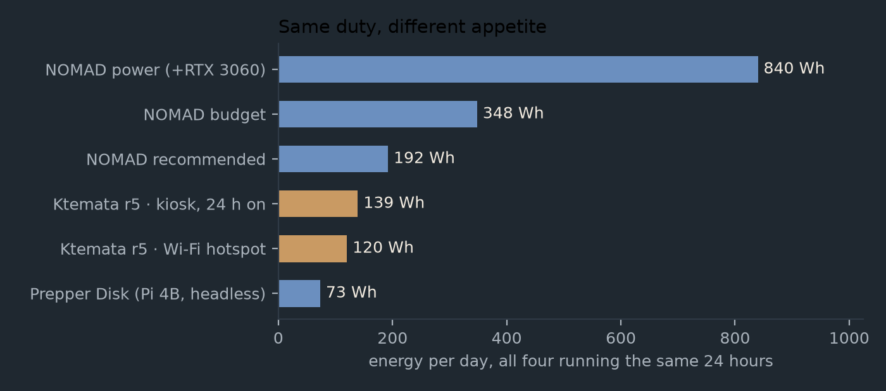
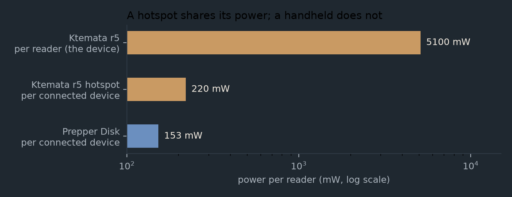
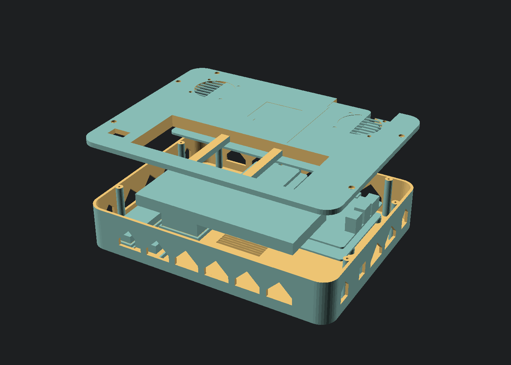
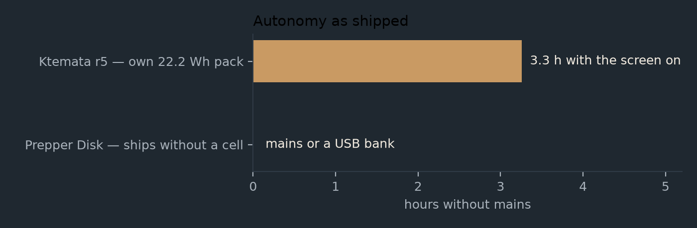

Comparisons
Ktemata r5 with its Wi-Fi hotspot switched on, set against a commercial closed hotspot and the three Project NOMAD hardware tiers. Same 24 hours, AI off, one measuring stick.
- 4.4 Wr5 as a hotspot — 20 clients, screen off
- 120 Whper day, from a pack you carry
- ≈ €635built by you, parts documented
- 1.6–7×less energy than any NOMAD tier
These are three different machines that overlap in one place: all three put Wikipedia, maps, books and courses on hardware you own, with no internet. What differs is who assembles it, what it needs around it, and how many watts that costs.
The Prepper Disk is useless if the laptops and phones around it are drained — and they are usually the first thing to run out. It has no screen, no keyboard and no battery of its own: it is a hotspot waiting for a client. In a real grid-down week the phone is the first thing flat, so a device that can only be read through a phone has a single point of failure that it does not control. Ktemata puts the reader in the box.
Project NOMAD's hardware draws too much power for an off-grid device. Its own guidance is a 15–65 W mini PC; even the recommended tier idles at 8 W and peaks at 85 W, and the power build idles at ~35 W. Running any of them 24/7 costs 192–840 Wh a day and needs 226–988 Wh of battery to survive one cloudy day — a fixed installation with a battery bank, not something you carry.
Ktemata r5 is the third option: 4.0 W with the screen off, 5.1 W with it lit, 4.4 W as a Wi-Fi hotspot for twenty clients, all from a 22.2 Wh pack inside the case. It is the only machine here that ships with a battery at all, and the only one whose battery can actually run it.
| Platform | Shape | Needs another device? | Source |
|---|---|---|---|
| Ktemata r5 + hotspot | handheld computer in a Peli 1200: screen, keyboard, battery, its own access point | no — and serves up to 20 phones if you switch the radio on | CAD, firmware and scripts published in the repository; printed cassette in a bought case |
| Prepper Disk Premium | headless hotspot in a milled aluminium brick, 89 × 70 × 25 mm | yes — browse from your own phone | closed product; proprietary UI over Internet-in-a-Box |
| Project NOMAD budget | refurbished mini PC (OptiPlex Micro, ThinkCentre Tiny, EliteDesk Mini) | yes — a browser on the LAN | Apache-2.0, open source; you supply the hardware |
| Project NOMAD recommended | Minisforum/Beelink class mini PC, Ryzen 7/9, 32 GB | yes | same, open source |
| Project NOMAD power | the same plus an RTX 3060 12 GB or better | yes | same, open source |
Same duty, different appetite
The r5 row below is the shipped hotspot configuration: post-install.sh --hotspot
builds a NetworkManager access point (or hostapd + dnsmasq) at
10.10.10.1:8080, with ipv4.ip-forward 0 so it serves this box and
never becomes a router on someone else's LAN. It adds an estimated 0.4 W.

| Machine | Draw | Wh/day | Solar to sustain | Battery for 1 day | Price |
|---|---|---|---|---|---|
| Prepper Disk (Pi 4B, 512 GB) | 3.05 W (5 V) | 73 | 32 W | 86 Wh | €271 |
| Ktemata r5, Wi-Fi hotspot | 4.4 W (5 V) | 120 | 53 W | 141 Wh | ≈ €635 |
| Ktemata r5, kiosk, display on | 5.1 W (5 V) | 139 | 61 W | 164 Wh | ≈ €635 |
| NOMAD budget (refurb SFF) | 14.5 W (wall) | 348 | 153 W | 409 Wh | $150–300 |
| NOMAD recommended (UM890 class) | 8.0 W (wall) | 192 | 84 W | 226 Wh | $500–800 |
| NOMAD power (+RTX 3060) | 35.0 W (wall) | 840 | 369 W | 988 Wh | $1,000+ |
The Prepper Disk is the most parsimonious of the lot on paper: a Pi 4B idles at 2.7 W where a Pi 5 idles at 3.0 W, and it has no display to feed. Ktemata's hotspot row pays 0.7 W of that back and still lands at 120 Wh/day — a third of the cheapest NOMAD tier. The Pi is not a compromise here; it is the reason the numbers are small.

Pros and cons, honestly
Ktemata r5
- Works alone. 720 × 1280 touchscreen, keyboard, trackpad and battery in one rugged case.
- Very low draw for a full computer. 4.0 W screen off, 5.1 W with the display lit; the Pi 5's own idle is 3.0 W.
- Carries its power. 22.2 Wh pack, 2.6–4.2 h, charged at 8.4 V from mains, solar via MPPT, or a separate hand crank.
- Hotspot included, and a real off switch. Same dual-band radio as any Pi; one install flag serves 20 clients and leaves the screen usable. For a build that must not transmit,
--no-radiodisables the on-board Wi-Fi and Bluetooth in the firmware. - 512 GB NVMe SSD in a standard M.2 socket — a drive swap, not a card replacement.
- Field-repairable, upgradable and inspectable. Standard Pi, standard display, standard HAT, Peli case, published STLs; the firmware is a thousand lines you can read.
- Buildable and hackable. Parametric OpenSCAD, an export toolchain, a post-install script and a hotspot installer — all in the repository, no vendor in the loop.
…and what it costs you
- You build it. 3D printing, assembly, soldering, firmware flashing, and the willingness to debug.
- ≈ €635 against €271 for a Prepper Disk, and no warranty, no support desk.
- Content is what you download. No licensed field guides, no curated updates.

Prepper Disk
Wins
- Arrives configured, tested, with a one-year warranty and returns.
- €271, or €151 as a card for a Pi you already own.
- 0.16 L and ~0.2 kg — fits a glovebox or a go-bag lid.
- 73 Wh/day, and it serves a room by default.
- Curated, licensed content that updates, including material you cannot assemble yourself.
- Sells a €22 Faraday bag that actually fits it.
Costs
- Useless once the client devices are flat. No screen, no keyboard, no battery — it is a hotspot waiting for a phone that still has charge, and phones are usually the first thing to die in an outage.
- Ships without a cell; mains or a 5 V USB bank, which is one more thing to keep charged.
- 512 GB on a microSD card — the most common failure point in a Pi deployment.
- An appliance, not a computer: browse what it serves, and that is the contract.
- Closed enclosure integration; not field-serviceable.
- Proprietary UI and licensed content are also a dependency on one company.
Project NOMAD
Wins
- Genuinely open source (Apache-2.0) and hardware-agnostic; it is a management layer over Kiwix, Kolibri, ProtoMaps, CyberChef and optional local AI.
- Real multi-user serving: several browser clients, courses with progress tracking, an admin UI.
- The recommended tier idles at 8 W — less than a refurbished SFF — so it is not automatically a power hog.
- You can build it on hardware you already own; NOMAD runs on almost any x86 Linux box.
- Same content pipeline Ktemata uses: NOMAD manages the ZIM library on the Pi too.
Costs
- Always needs a second device with a browser. There is no screen and no keyboard of its own (depending on the build).
- Its hardware draws too much power for an off-grid device. Its own guidance is a 15–65 W mini PC; the power tier idles at ~35 W, which is 5.4× Ktemata's reading draw, and the recommended tier peaks at 85 W.
- 24/7 energy of 192–840 Wh/day needs a 226–988 Wh battery to survive one sunless day — a fixed installation with a battery bank, not something in a bag.
- Upstream images are amd64-only; running it on a Pi needs a community ARM64 build.
- No authentication; it expects a trusted LAN.
- An x86 mini PC is not a device you carry, and not one you can reprint.
Power is where the Pi earns its place
Three numbers make the case better than any adjective:
- 3.0 W — a headless Pi 5, SSD and all. The cheapest NOMAD tier's refurbished office PC sits at 14.5 W doing the same job.
- 5.1 W — the same machine with a 5″ screen lit. That is below the recommended NOMAD tier's 8 W idle, and that tier has no screen at all.
- 2.5× — how far a Pi 5 ever rises above its own idle. A Ryzen mini PC rises 10.6×, so the moment a NOMAD station is busy it is pulling 85 W.

The low draw is not only an efficiency claim; it is what makes the device self-contained. A pack that fits inside the case runs a Pi for hours. The same 22.2 Wh gives a 35 W NOMAD power build 28 minutes at idle and four minutes at load — which is why that tier is a fixed installation with a battery bank, not something you carry.
DIY and open source, concretely
What "open" buys here is not ideology, it is the ability to keep the thing alive when the vendor is not:
| Layer | Ktemata r5 | Prepper Disk | Project NOMAD |
|---|---|---|---|
| Enclosure | parametric OpenSCAD, STLs, a bought Peli case | milled aluminium, closed | whatever the PC came in |
| Electronics | off-the-shelf Pi 5, Touch Display 2, UPS HAT (B), 18650 cells | Pi 4B, microSD, custom integration | your choice; NOMAD is hardware-agnostic |
| Firmware / software | PlatformIO firmware for the status OLED, post-install and hotspot scripts, kiosk launcher | vendor image, proprietary UI | Apache-2.0, containers, one install script |
| Content | whatever you download from the Kiwix catalogue | curated and licensed, updated | Kiwix, Kolibri, ProtoMaps and more, downloaded on demand |
| When it breaks | swap the Pi, reprint the shell, read the source | one-year warranty, then a support ticket | fix it or fork it |
The hotspot is a good example of the difference. On the Prepper Disk it is the product, already configured. On Ktemata it is a flag:
sudo ./work/scripts/post-install.sh --hotspot --hotspot-pass 'somepassphrase'
# clients join "Ktemata" and open http://10.10.10.1:8080/
If the installer breaks, you can read it. If you want the device to be silent rather than
merely unjoined, you run --no-radio: the on-board Wi-Fi and Bluetooth are disabled
in the firmware, so there is no interface to find and nothing to associate with. That control is
what DIY means at this layer — not that you must solder, but that no one can take the choice
away from you.
Recommended
If you want one device that works when nothing else does, build Ktemata r5 and turn the hotspot on. 4.4 W, a 22.2 Wh pack, a screen and a keyboard in one IP67 case, and an access point for the other nineteen people in the room when they need it. It costs about €635 and a weekend, and every part of it is documented or replaceable.
| If… | Then | Energy/day |
|---|---|---|
| you will be alone with the device, or the phones may be the first thing to die | Ktemata r5 — screen, keyboard and battery in the case, hotspot included | 120–139 Wh |
| you want a library in a bag, working in ten minutes, and accept that it needs a charged phone to read anything | Prepper Disk — €271, 0.2 kg, no assembly | 73 Wh |
| you have mains power and want to serve a household or classroom, with courses and multi-user progress | NOMAD recommended — 8 W idle is a good server profile, but it is not a portable | 192 Wh |
| you want local AI as the point, on a desk, with a battery bank | NOMAD power — a fixed installation, 840 Wh/day and up | 840 Wh |
| you already own a retired office PC and the sun is not your only source | NOMAD budget on it — cheapest path to a full library | 348 Wh |
None of these is wrong. Ktemata and NOMAD are not even rivals in the same sense: NOMAD is the content management layer, and Ktemata runs it. A Pi 5 with 4 GB runs NOMAD without AI in under a gigabyte, which is why the same device can be a reader and a small station. The difference is what you carry.
Sources and caveats
- Prepper Disk: prepperdisk.com product page (Pi 4B 2 GB, 512 GB, 89 × 70 × 25 mm, 20 devices, €270.95, one-year warranty) and its DIY page for the parts-and-cost breakdown. Content list, review scores and shipping claims are the vendor's own and are not independently verified here.
- NOMAD: hardware guide for the three tiers and prices; its README for the Apache-2.0 licence, the under-1 GB RAM figure without AI and the amd64-only images. Idle figures are independent measurements (ServeTheHome reviews of the OptiPlex 7070 Micro, ThinkCentre M710q/M920q, Minisforum UM890 Pro), not vendor claims.
- Pi 4B idle is 540 mA at 5 V = 2.7 W with nothing on USB (Dramble benchmarks). The 0.35 W Prepper Disk and 0.4 W Ktemata access-point figures are estimates, unmeasured.
- Ktemata figures share the model and the assumptions of the power page: η = 0.88, 0.85 depth of discharge, 3.5 peak-sun-hours, 0.65 derate, €0.30/kWh. ≈ €635 is the reconciled BOM without the Peli case and cells, so treat it as indicative.
- Volume and mass are computed from the Peli 1200's external dimensions plus the cassette, and the Prepper Disk's from its published 3.5 × 2.75 × 1 in.
- Per-reader figures flatter the hotspot. A Ryzen box answers several clients at once; a Pi drives one screen. Neither watts-per-hour nor watts-per-concurrent-reader is a fair single number, so this page does not claim one.
- The r5 hotspot cost is an estimate and the AP is off by default. With the radio on you are findable, and the device is a bigger target for a curious stranger than a closed box in a bag.
- EMP: the Prepper Disk sells a working Faraday bag for €22; Ktemata's shielding is a planned r6 direction, not a shipped feature.
Reproduce the numbers, and the charts on both pages, from one script:
python3 work/scripts/power_chart.py --compare # Prepper Disk tables + charts
python3 work/scripts/power_chart.py --site # the dark charts site/ uses
python3 work/scripts/power_chart.py --tables # tables only, no imagesThe longer prose is in docs/COMPARISON-PREPPERDISK.md and docs/POWER.md.